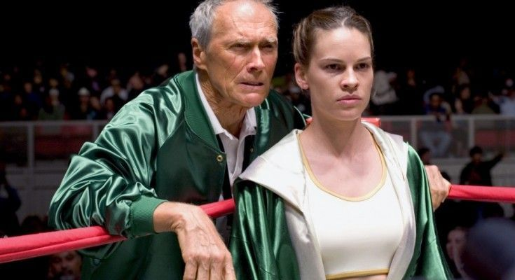

Million Dollar Baby , Clint Eastwood lo vuelve ha hacer.
Cuando Clint Eastwood parecía haber tocado de nuevo la cumbre de su carrera con ‘Mystic River’ (id, 2003), hizo lo que nadie pensaba y parece sólo reservado a los grandes, seguir tocando la cumbre, manteniendo la coherencia de su mirada y al mismo tiempo evolucionando como artista. Si el film protagonizado por Sean Penn y Tim Robbins era un duro golpe del que es difícil reponerse con facilidad, la historia de Frankie y Maggie es capaz de llegar aún más adentro y revolver sin compasión lo que cada uno tenga en su interior. Una historia auténtica y sencilla en un momento en el que el séptimo arte está dominado por el consumismo y disfrutes inmediatos.
El proyecto de ‘Million Dollar Baby’ (id, Clint Eastwood, 2004) nació cuando Anjelica Huston leyó la novela de F.X. Toole ‘Rope Burns’ y se la enseñó al productor Albert S. Ruddy con la esperanza de que se la ofreciera para dirigir. El paso del tiempo hizo que entrara en el proyecto Paul Haggis —hubo muchos nombres que se barajaron en este proyecto, anotemos, Sandra Bullock, Arnold Schwarzengger, Isabel Coixet, Ashley Judd y Shekhar Kapur, entre otros— quien mezcló hábilmente dos novelas de Toole mezclando personajes en un borrador que se le presentó a Clint Eastwood. Haggis también quería dirigirla, pero cuando Eastwood se vio involucrado quiso dirigirla e interpretarla, sorprendiendo a Haggis cuando acepta filmar el borrador y le pide colaboración para un futuro proyecto —cierta película bélica producida por Steven Spielberg—.
El proyecto de ‘Million Dollar Baby’ (id, Clint Eastwood, 2004) nació cuando Anjelica Huston leyó la novela de F.X. Toole ‘Rope Burns’ y se la enseñó al productor Albert S. Ruddy con la esperanza de que se la ofreciera para dirigir. El paso del tiempo hizo que entrara en el proyecto Paul Haggis —hubo muchos nombres que se barajaron en este proyecto, anotemos, Sandra Bullock, Arnold Schwarzengger, Isabel Coixet, Ashley Judd y Shekhar Kapur, entre otros— quien mezcló hábilmente dos novelas de Toole mezclando personajes en un borrador que se le presentó a Clint Eastwood. Haggis también quería dirigirla, pero cuando Eastwood se vio involucrado quiso dirigirla e interpretarla, sorprendiendo a Haggis cuando acepta filmar el borrador y le pide colaboración para un futuro proyecto —cierta película bélica producida por Steven Spielberg—.
(From here to the end, Spoilers) ‘Million Dollar Baby’ narra la historia de Frankie Dunn y Maggie Fitzgerald, el primero dueño de un gimnasio de mala muerte y que conoció tiempos mejores, al que acude la segunda persiguiendo un sueño: ser alguien en la vida boxeando. Esa línea podría resumir tranquilamente el esqueleto de la trama, en apariencia sencilla. Cualquiera podría esperarse una película más sobre boxeo, en la línea de los míticos títulos de la historia del cine y que no hace falta citar aquí. Pero Eastwood y Haggis van mucho más allá y utilizan el deporte como excusa para hablar de cosas mucho más profundas y que nos tocan más de cerca, sin obviar ni dejar de lado, y de forma muy inteligente, las razones por las que los personajes aman tanto el boxeo.
Frankie se negará en principio en entrenar a Maggie, no entrena chicas y ella ya tiene 31 años, una edad algo tardía para querer ser alguien en el boxeo. Pero tras el abandono de un chico al que estaba entrenando, y que huye de él para luchar por el título mundial, y ver como Maggie se esfuerza lo impensable, Frankie cambia de opinión y nace entre ellos una relación que se convertirá en lo más importante de sus vidas. Una relación en principio paterno filial, basada en el respeto y la admiración, y más tarde en el cariño. Incluso puede verse algo más —atención a la expresión de Maggie cuando Frankie le insinúa en broma, o no, que él le propondrá matrimonio si nadie lo hace; o los besos que se dan, de una ternura exquisita y cada vez más cerca de la boca—, pero como es costumbre en el cine de Eastwood, de forma muy sutil.
Si acaso es una historia de amor mucho más compleja que la narrada en su previa ‘Primavera en otoño’ (‘Breezy’, 1973), donde un otoñal William Holden enamoraba a una jovencísima Kay Lenz. Maggie se empeña en perseguir a Frankie para que la entrene, el resto viene de la necesidad de ser amado, o querido, por alguien en esta vida perra. Frankie va a misa desde hace 23 años, sintiéndose culpable probablemente de la mala relación que tiene con una hija a la que escribe y jamás obtiene respuesta; y Maggie trabaja en un restaurante del que se lleva las sobras para ahorrar, mientras su familia la desprecia por dedicarse a algo que no debería (el boxeo). Dos seres solitarios que se encuentran en un especie de purgatorio, un gimnasio donde verán la oportunidad de limpiar juntos sus destrozadas almas. Y como colofón, todo ello narrado desde un punto de vista que se revela justo en el tramo final. Esa voz en off, que durante toda la película parece ser utilizada como el recurso de siempre, se descubre más tarde como una especie de epístola, una carta que el compañero de Frankie —un maravilloso Morgan Freeman que se alzó con un Oscar por su trabajo, al lado de los premios a película, dirección y actriz principal— escribe a la hija de aquel para contarle como era realmente su padre.
Para narrar su historia, Eastwood se poya en dos pilares fundamentales. Por un lado la fotografía, obra de Tom Stern, en el que quizá sea su mejor trabajo, y que una vez más en el cine de Eastwood, hace que sus personajes parezcan pertenecer a algún cuadro de Caravaggio, siempre ocultos entre sombras acorde con sus vidas, destrozadas hace ya tiempo, algunas de ellas con una última oportunidad de ser alguien, o de ayudar a alguien a serlo, y otras simplemente no. En ese aspecto ‘Million Dollar baby’ es un film de contrastes, en el que las historias paralelas tan del gusto de Eastwood, cobran un mayor sentido al complementarse con el resto. Por otro lado, la cámara de Eastwood nunca ha estado tan bien utilizada, haciendo sutiles movimientos siguiendo a los personajes, y filmando a los mismos desde el ángulo perfecto o para querer decir algo. Cabe citar el momento en la gasolinera tras visitar a la madre de Maggie, y esta empieza a darse cuenta de que está sola en el mundo, de que solo le queda Frankie. Eastwood sitúa la cámara delante del parabrisas lleno de agua, la cual simula las lágrimas interiores de Maggie —es una tipa dura, que no llorará tan fácilmente—, Frankie limpia el agua. La metáfora no puede ser más clara. Lo que no podemos imaginarnos en ese momento es que limpiará sus lágrimas, su dolor, de una forma poco esperada.
‘Million Dollar Baby’ juega limpiamente con el espectador durante su primera hora y media. Es un drama sobre la familia perdida, es una película sobre boxeo, incluso a ratos una comedia —las conversaciones entre Frankie y Scrap (Freeman) sobre calcetines son antológicas—, y cuando presenciamos que Maggie va a cumplir su sueño —hay que decir que las peleas en el ring están muy bien filmadas y que huyen de toda espectacularidad, tirando al realismo—, el film nos da un derechazo, nunca mejor dicho, nos tumba y ya no nos levantamos. Lo que viene a continuación es literalmente insoportable del dolor que desprende —excepcional la forma de prepararnos para ello, por un lado son varias las veces en las que Maggie demuestra no saber respirar, y el fatídico taburete, tantas veces enfocado— hablar de la eutanasia sin trampas ni efectismos, ni moralinas de ningún tipo. El espectador, que bien podría ser Scrap, entiende las posturas de Maggie, cuando le pide a Frankie que la libere de ser un mero cuerpo apenas sin vida, y también la de Frankie, quien no pudo hacer nada para que su hija le escuchase y ahora no quiere deshacerse de Maggie.
La encrucijada final de Frankie en esos últimos instantes —con una fotografía que se oscurece gradualmente cada vez más— se debe a que es un católico convencido —aunque una de sus diversiones es cabrear a su párroco con preguntas imposibles de contestar— que sabe que si hace lo que Maggie le pide se perderá en un lugar aún más oscuro del que nunca saldrá, pero también comprende que lo que Maggie desea (morir) es totalmente coherente. Al fin y al cabo todos vamos a morir, no sabemos cuando, eso es lo que nos diferencia de Maggie, quien ha obtenido en su vida fama, dinero y que griten su nombre —en realidad la expresión gaélica que lleva en su batín, y cuyo significado revelará Frankie en una amarga y bella secuencia—, lo que siempre soñó. ¿Qué hay de malo en morir justo después de lograr lo que uno siempre ha amado? ¿Qué hay de malo en abandonar esta vida si no se vive dignamente? Maggie lo deja muy claro, y no somos quienes para juzgarla. Una vez más un personaje femenino en el cine de Eastwood que toma una decisión de lo más importante y que afectará poderosamente en los demás.
Todo lo que vemos en ‘Million Dollar baby‘ es el punto de vista de Scrap, ya sea por lo que él ha presenciado, o por lo que Frankie y Maggie le han contado. Esto cobra mucho significado en la escena de la visita de la familia de Maggie al hospital donde está ingresada. Atención a la cámara, desde el punto de vista de Frankie, enfoca las camisetas que llevan, recuerdos de parques de atracciones, y más tarde el intento de quedarse con el dinero de su hija en un artimaña de abogado que llegaría para odiar esa profesión. No es que la familia sea así, algo que se le criticó en el momento de su estreno como manipulación, es que Frankie los ve así. Scrap es como una especie de testigo de los hechos, alguien que no se atreve a juzgar a nadie, pero que es capaz de dar el mejor de los consejos a su mejor amigo en el momento que más lo necesita. Esa conversación final en los vestuarios del gimnasio, casi en oscuridad total, no deja lugar a dudas cuando Scrap le dice a Frankie que podría vivir muy tranquilo si Maggie muriese, pues sabría que alcanzó su sueño y él le ayudó a conseguirlo.
Scrap esperará por su amigo, al que vio irse del hospital después de hacer algo que no quería. Nunca más volverá a verle, y pensando sobre ello escribirá un carta a la hija de Frankie, porque pocos dolores hay en este mundo que se asemejen a que tu familia o tus seres más queridos no sepan como eres. Y mientras soñamos con el hecho de que la hija lea algún día las sentidas y emotivas palabras de Scrap, vemos, o mejor dicho percibimos, como Frankie permanece en algún lugar entre ninguna parte y el olvido.
